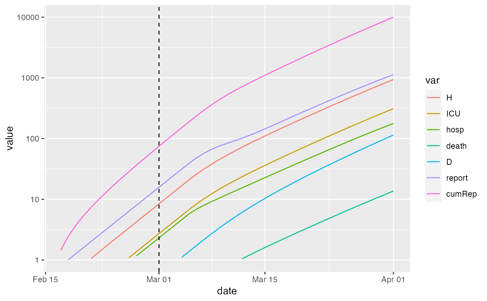

run simulation with one or more breakpoints
run_sim_break( params, extra_pars = NULL, time_args = NULL, sim_args = list(), return_timevar = FALSE, ... )
| params | parameters |
|---|---|
| extra_pars | parameters that are used to set up time-varying parameters, etc., but not used by |
| time_args | list containing |
| sim_args | parameters to pass to |
| return_timevar | return data frame of params by time? |
| ... | extra args (why??) |
params <- read_params("ICU1.csv") pt <- data.frame(Date = "2020-03-01", Symbol = "beta0", Relative_value = NA) r1 <- run_sim_break(params, time_args=list(params_timevar = pt), sim_args=list(start_date="2020-02-01", end_date="2020-04-01"), extra_pars=list(time_params = 0.5)) plot(r1,log=TRUE)